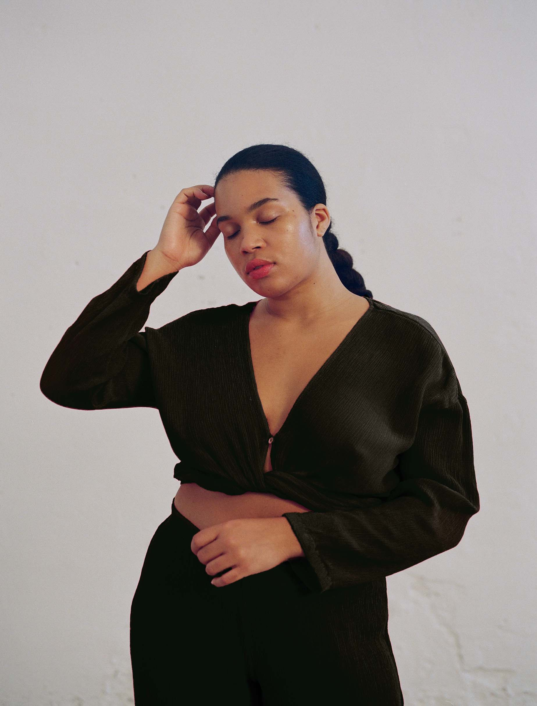
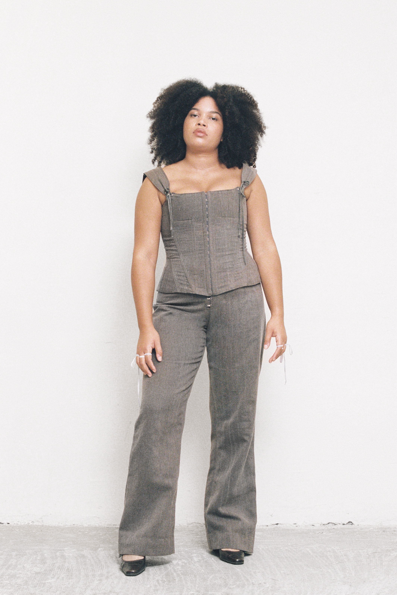
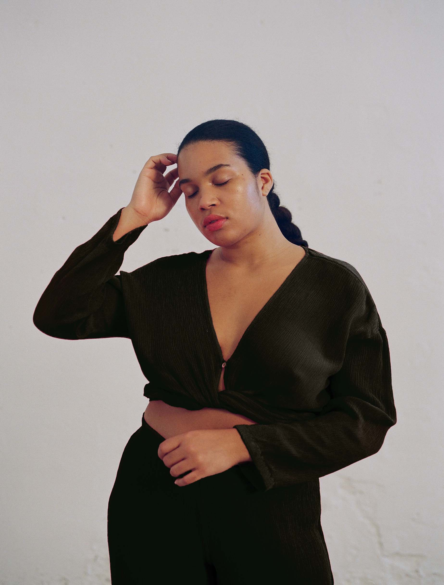
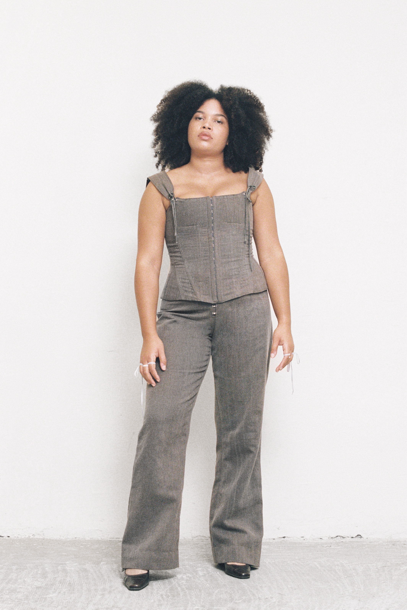

Sobre mi
La Rosana és una artista polifacètica, que practica el seu art des de la perspectiva que la seva pròpia barreja de cultures li ha permès. Les seves arrels nigerianes, turques i gallegues s’uneixen amb la cultura de la seva infància i adolescència, viscudes a Barcelona.
És fàcil per ella moure’s a través de les diferents cares del món del disseny. Darrere les càmeres ha treballat com a estilista, florista i fins i tot com a maquilladora. Davant, com a model de fotografia, video i passarel·la, participant en projectes de moda, publicitat, videoclips, revistes i col·laboracions amb projectes socials.
 



En els darrers anys ha treballat amb marques de moda com Helmut Lang, Paloma Wool, Calvin Klein, H&M o Zalando i amb artistes com Sthepania Yepes, Itziar Ngang o Carlota Guerrero. Ha aparegut a revistes com VEIN o TWIN Magazine i a l’àmbit del rodatge de publicitat ha treballat en anuncis per Seat, Lynk&Co i C&A entre d’altres. Recentment, ha aparegut a la campanya de l’últim llançament d’Apple per promocionar l’iPhone 14.
És una persona flexible i curiosa, que gaudeix experimentant amb coses noves per trobar maneres diferents d’entendre i crear l’art i el disseny. Per a ella, ser model forma part de l’activisme, ja que ho entèn com a una manera més d'intentar deconstruir el món de la moda des de dins i poder ser el referent que ella no va tenir. A banda d’això, també expressa el seu compromís de millora social en altres espais com poden ser xerrades i activitats per crear comunitat.